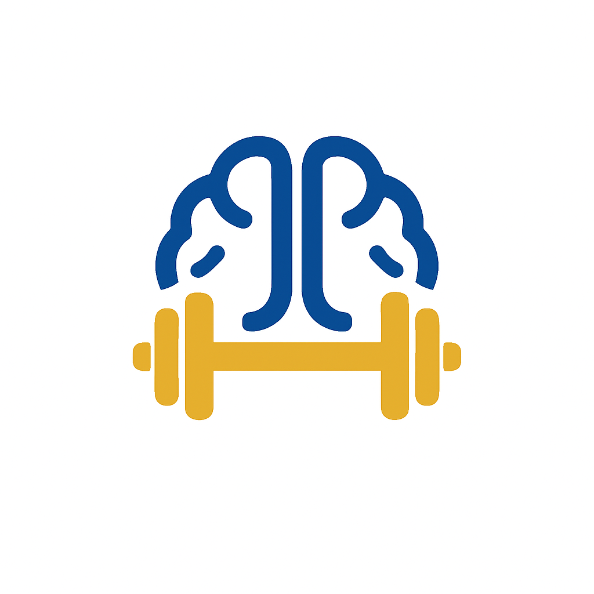

<!DOCTYPE html>
<html lang="es">
<head>
  <meta charset="utf-8"/>
  <meta name="viewport" content="width=device-width, initial-scale=1"/>
  <title>Filosofía — Kablugen Studios</title>

  <!-- MISMO CSS GLOBAL QUE EL RESTO -->
  <link rel="stylesheet" href="./style.css?v=3">
</head>
  <script src="script.js?v=3"></script>
</body>
</html>

<body class="fade-in" data-page="filosofia">
  <!-- HEADER IGUAL AL DE INDEX, SOLO CAMBIA EL is-active -->
    <!-- HEADER -->
  <header>
    <a href="index.html" class="logo" aria-label="Kablugen Studios">
      
      <div class="brand">
        <span class="kablugen">KABLUGEN</span>
        <small>STUDIOS</small>
      </div>
    </a>

  

    <nav>
      <ul>
        <li><a data-nav href="index.html">Inicio</a></li>
        <li><a data-nav href="producto.html">Producto</a></li>
        <li><a data-nav class="is-active" href="filosofia.html">Filosofía</a></li>
        <li><a data-nav href="cofundadores.html">Cofundadores</a></li>
        <li><a data-nav href="acerca.html">Acerca de nosotros</a></li>
      </ul>
    </nav>
  </header>


  <main>

    <!-- =================== HERO =================== -->
    <section class="hero-phi">
      <div class="hero-phi__inner">
        <span class="hero-phi__kicker">Kablugen Studios</span>
        <h1>Filosofía</h1>
        <div class="gold-underline" aria-hidden="true"></div>
        <p class="quote">“Porque para nosotros, jugar es descubrir, y descubrir es aprender.”</p>
      </div>
    </section>

    <!-- =================== IDENTIDAD =================== -->
    <section class="block identity">
      <div>
        <div class="eyebrow">Nuestra identidad corporativa</div>
        <h2>Nuestra identidad corporativa</h2>

        <p>Nuestra identidad corporativa se funda en una combinación sólida de valores compartidos y una gran dedicación a cada proyecto. Creemos firmemente que la manera más efectiva de enseñar no es solo transmitir información, sino hacerlo de un modo dinámico, entretenido y profundamente práctico. Por eso, cada uno de nuestros juegos está diseñado para convertir conceptos complejos en experiencias, tales como actividades interactivas, retos motivadores y narrativas que acompañan el proceso de aprendizaje de principio a fin.</p>

        <p>Además, nuestro espíritu colaborativo es el motor que impulsa cada paso: fomentamos un ambiente de confianza y respeto mutuo, donde las ideas fluyen libremente y cada aportación es valorada. Esa cohesión interna no solo fortalece nuestra creatividad, sino que también garantiza que cada proyecto avance con eficacia. En definitiva, nuestra identidad corporativa se traduce en un compromiso continuo por ofrecer soluciones educativas innovadoras, eficaces y, sobre todo, divertidas.</p>

        <div></div> </div>
      </div>

      <div class="iso-wrap">
        <!-- Si querés, reemplazá por una textura o foto conceptual -->
        
      </div>
    </section>

    <!-- =================== FILOSOFÍA CORPORATIVA =================== -->
    <section class="block phi-core">
      <div class="phi-core__grid">
        <div class="left">
          <div class="eyebrow" style="color:#dcd7ff">Filosofía corporativa</div>
          <h2>Filosofía corporativa</h2>

          <p>En Kablugen, nuestra filosofía se fundamenta en la creatividad, la colaboración y la pasión por transformar la educación. Nos guía el deseo de educar de manera diferente, combinando conocimiento y juego como herramientas para aprender disfrutando.</p>

          <p>Aunque somos un equipo joven, compartimos una fuerte convicción por hacer las cosas con compromiso, respeto y apertura, manteniendo siempre viva la curiosidad y el entusiasmo por innovar.</p>

          <p>Creemos en la colaboración como motor de crecimiento, construyendo juntos una forma de trabajo dinámica, inclusiva y centrada en el desarrollo colectivo, donde cada integrante aporta desde su autenticidad.</p>

          <p>Esta filosofía no solo define lo que hacemos, sino cómo lo hacemos: con empatía, dedicación y la intención genuina de generar un impacto positivo en quienes se acercan a nuestros proyectos.</p>

          <p>Nuestro enfoque busca ofrecer experiencias significativas y accesibles, que aunque nacen en una pantalla, van más allá de ella: son puentes hacia el conocimiento, espacios donde el deseo de jugar se convierte, casi naturalmente, en una oportunidad para aprender.</p>

          <p><em>Porque para nosotros, jugar es descubrir, y descubrir es aprender.</em></p>
        </div>
        <div class="right" aria-hidden="true">
              
        </div>
      </div>
    </section>

    <!-- =================== MISIÓN / VISIÓN =================== -->
    <section class="block mv">
      <article class="panel">
        <h3>Misión corporativa</h3>
        <p>Kablugen es un microemprendimiento de desarrollo de software que se dedica a desarrollar videojuegos educativos que combinan entretenimiento y aprendizaje, ofreciendo experiencias interactivas que faciliten la incorporación del conocimiento de manera dinámica y atractiva. Nuestro objetivo es transformar la educación tradicional, haciéndola accesible, efectiva y cercana a las nuevas generaciones.</p>
      </article>

      <article class="panel">
        <h3>Visión corporativa</h3>
        <p>Aspiramos a posicionarnos como un estudio líder en el ámbito de los videojuegos educativos, reconocidos por nuestra capacidad de innovar en la forma en que se aprende. Soñamos con un futuro donde la educación y el juego no sean caminos separados, sino una sola experiencia que inspire, motive y enseñe.</p>
      </article>
    </section>

    <!-- =================== VALORES =================== -->
    <section class="block values">
      <h2>Valores centrales corporativos</h2>
      <div class="values-grid">
        <article class="value">
          <h4>Creatividad profesional</h4>
          <p>Diseñamos cada juego con una visión única, que combina contenido educativo de calidad con mecánicas divertidas y envolventes.</p>
        </article>
        <article class="value">
          <h4>Trabajo en equipo</h4>
          <p>Fomentamos una cultura de colaboración interna constante, donde cada integrante aporta al desarrollo y mejora de nuestras ideas.</p>
        </article>
        <article class="value">
          <h4>Innovación continua</h4>
          <p>Buscamos nuevas formas de aprender jugando, manteniéndonos actualizados con las tecnologías y metodologías más efectivas.</p>
        </article>
        <article class="value">
          <h4>Empatía y comunicación</h4>
          <p>Nos relacionamos con colaboradores y socios con respeto, claridad y apertura, entendiendo sus planteos y expectativas.</p>
        </article>
      </div>
    </section>

    <!-- =================== CULTURA =================== -->
    <section class="block culture">
      <h2>Cultura corporativa</h2>
      
        <div class="text">
          <p>Sobre nuestro recorrido y el tiempo que llevamos, no hay mucho que contar todavía, pero sí mucho por construir, imaginar y compartir. Hemos surgido hace relativamente poco, pero desde entonces nos hemos enfocado con entusiasmo y compromiso en darle forma a una idea clara y poderosa: transformar la manera en que las personas aprenden, haciéndolo a través de experiencias dinámicas, innovadoras y motivadoras.
          Sabemos que estamos dando nuestros primeros pasos, pero eso no nos limita; al contrario, nos impulsa. Creemos firmemente que el cambio no está relacionado al tiempo que llevás, sino la claridad con la que proyectas y plasmás tu propósito. Por eso, desde el primer momento, hemos estado planificando algo sólido, repleto de proyectos que mezclan el entretenimiento con el aprendizaje, la diversión y el crecimiento personal.
          No se trata solo de crear juegos o actividades visualmente atractivas: queremos generar vivencias que conecten, que dejen huella, que enseñen casi sin que el jugador lo note, sumergido en una experiencia que lo invita a descubrir por sí mismo.</p>
        </div>
      </div>
    </section>

    <!-- =================== CTA FINAL =================== -->
    <section class="phi-cta">
      <h2>Volver al inicio</h2>
      <a class="btn" href="index.html">Inicio</a>
    </section>

  </main>

  <!-- FOOTER -->
  <footer style="background:var(--dark); color:#fff; text-align:center; padding:26px 16px; border-top:1px solid rgba(194,158,110,.3)">
    <p>Kablugen Studios 2025 — Todos los derechos reservados</p>
  </footer>
</body>
</html>
